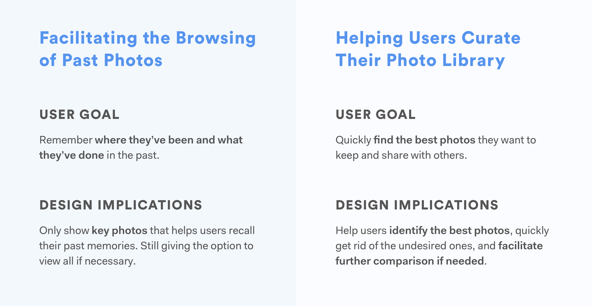
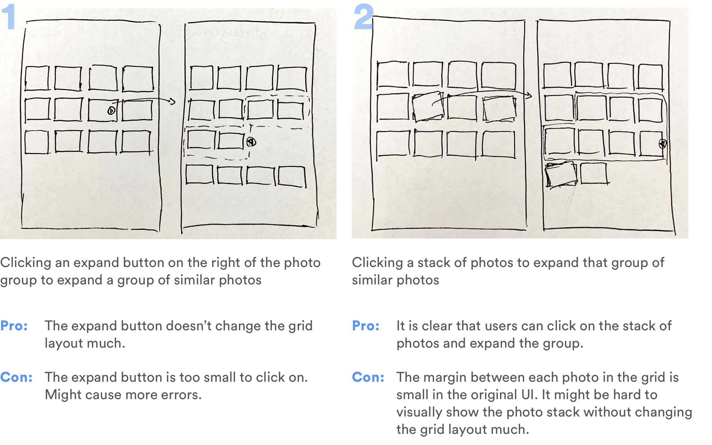
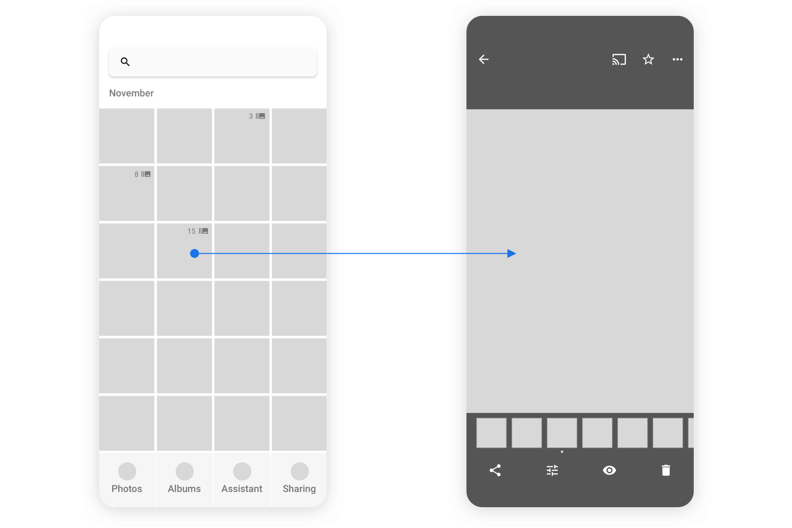
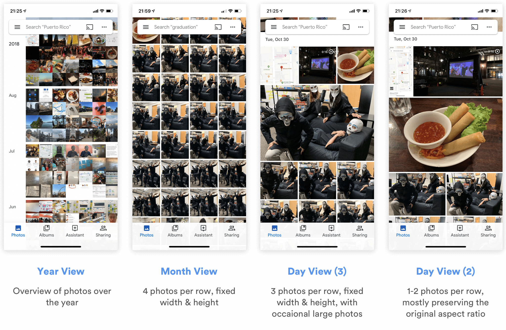
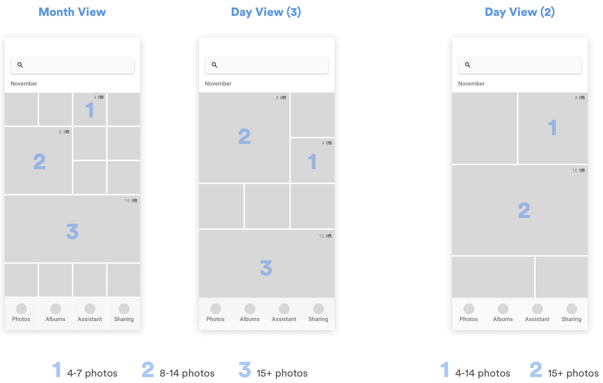

Overview
Why Redesigning Google Photos?
I love Google Photos. As a user, I think it's my favorite app for organizing photos, looking them up, quickly sharing them with friends, and getting fun animations & collages. As a designer, I love how it leverages the power of machine learning to explore more intuitive ways for users to manage their photos, such as using natural langauge to search for photos instead of looking through a lengthy, messy timeline.
However, I believe that Google's machine learning technologies can be further pushed to make the photo management experience easier. A problem that my friends and I usually encounter is that when taking photos, we'd like to take a lot of them, and then select the best ones afterwards. The selection process can be time consuming and frustrating, and if we leave all those photos there, they'll soon clutter the photo library, making it hard for us to find what we want. This gave me the initial idea: what if we can rethink the way photos are presented in Google Photos, and make the selection process much easier?
Research
Defining User Needs
The fact that my friends and I encounter the problem only gives me a partial understanding of it. I cannot assume that the problem is widespread enough that it's worth the effort to design something to solve it. To quickly understand whether this is a problem worth solving, I decided to 1) look into photography forums on Reddit, and 2) conduct quick, semi-structured interviews with people around me.
Online Forums
Because of the time constraint, I decided that online forums would be the quickest way for me to understand the problem. Therefore, I went to photograph-related sub-reddits to ask whether having multiple similar photos cluttering the photo library is a problem that others encounter.
What I found was surprising. People's responses generally fell into the following two categories:
1. Good photographers shouldn't take too many photos in the first place; then it will not be a problem.
2. I am willing to/I have to spend the time and efforts to pick from all the photos I took and edit them.
Why is this?
As I looked more into their answers, I realized that the reddit users who responded tend to be more experienced photographers! Unlike those who are just casually taking snapshots of life, these semi-professional or professional photographers either take fewer, high-quality shots, or spend a long time manually refining their photographs using tools like Lightroom. In other words, they either don't have lots of similar photos in their library, or do have a lot, but consider it necessary to go over them one by one to make sure they select the best photos and post-process them.
Therefore, it seems like more professional photographers fall out of my target audience. What about more casual photographers, who just use cameras to capture snapshots of life?
Interviews
With that question in mind, I drafted a couple of questions and started casually asking people around me about their habits of taking photos, and whether they encounter any difficulties organizing them as of now. I had the hypothesis that people who are more casual and less calculated when taking photos will have frustrations cleaning their photo library and getting rid of similar photos.
As I expected, all the casual/semi-professional photographers agreed that it is normal for them to take a lot of similar photos, and that it is a pain for them to organize them afterwards because they 1) either want to select the best ones to share (on social media, with friends), or 2) need to clean up those photos to save storage space or remove clutter.
For more professional photographers, it depends on the person and the context. Some professionals avoid taking similar photos in the first place and have the ability to capture amazing shots on one click; others take lots of photos, but use more professional tools other than Google Photos to post-process photos.
However, professional photographers, especially those who do take lots of similar photos, are not always in their "photoshoot mode." When they do take photos casually, they'd still use their phones to compare and delete unwanted ones, and would run into similar problems as casual photographers do.
Personas & Anti-Persona
I then summarized the research and created the following personas to guide my design process. I also created an anti-persona to make sure that I remember who I am not designing for.
Domain Research
Knowing that the problem exists, I looked into the following existing products and features, trying to find inspirations and gaps:
- Gemini: Automatically detects similar photos and suggest ones to delete. Works well helping users quickly clean up photos, but doesn't facilitate comparison. Users will need to pay for the app and enter it on purpose to do the cleaning.
- Burst Photo's Display in Apple Photos and Google Photos: Group burst photos together and allow users to select/keep key photos, and quickly delete unwanted ones. However, neither app facilitates comparison, and doesn't support all use cases (cannot include live photos, doesn't work well in sharing, etc.)
Design Goals
Based on the user needs and the gaps in existing products, I summarized the higher level goals I hope to achieve with the redesign.
Design
Having understood the design goals, I started brainstorming and developing ideas that can help me achieve these goals.
Facilitating the Browsing of Past Photos
Right now, users see all of their photos layed out in the "Photos" tab, where similar photos take a lot of space and prevent them from finding the ones they need. From my user research, I learned that users don't necessarily need all those photos there, especially the similar ones. They just want to see the key photos that remind them of what they've done and where they've been. If they are interested, they'd like to see all the different photos related to that particular moment.
Where Should the Redesign Happen?
My first instinct was to redesign the "Photos" tab, but before diving into a redesign, I asked myself: can this problem be approached elsewhere?
Google Photos enables users to search for particular photos using natural language (e.g. Paris Summer, Dogs, Sunset, etc.). It also automatically creates albums for photos taken around the same time and place, and recommend them to users. Should I focus on these functions instead to better help users browse through their memories?
I referred back to what I learned from the user interviews. Most users I talked with spent most of their time browsing through photos in their "Photos" tab. Some do use search, but only for searching specific photos. As for the automatically generated albums, users mentioned that those albums don't contain all the photos they took. Though the intention of those albums was to automatically include only the best photos for users, users still wanted to know that all the photos they took are there, and would prefer looking into the camera roll in the "Photos" tab.
Therefore, I decided that the "Photos" tab was where the design should happen.
Grouping and Expanding
One way to help users quickly clean the clutter in their camera roll is to use Machine Learning algorithms to group similar photos and only display the best one on the main grid view. Users can look through the photos, click on a group that interests them, and see all the other photos in the group expanded, so that they can look into them in details.
Technical Feasibility
Because of my technical background, I would always consider the feasibility of my design even when I don't have access to the project's engineers.
Two important questions about this design idea are 1) how to define "similar photos" and group them, and 2) how to define "the best photo" among a group of similar photos!!!!!!!!!!!!!!!!!!!!!!!!!!!!!
Design Alternatives
With this idea in mind, I quickly drew out 2 alternatives and thought about the pros and cons.
However, expanding a group on the grid layout means that the entire layout needs to be changed on click. It also means that users would need one more step to get to the photo they want. They would still need to select between similar looking thumbnails in the photo roll.
I then started asking myself: do users really need to see all those similar photos in the photo roll at all?
It seemed to be the convention to have all the photos displayed in the camera roll, at least in the expanded view; but as I referred back to the user needs and my design goal, I realized that this convention could be broken. The primary function of the camera roll is for users to quickly browse through and find/discover what they're looking for. There is no point of seeing several visually similar thumbnails there; users only care about how they differ when they can see the detailed image.
Therefore, I developed the third alternative.
I quickly drew out a wireframe and showed it to users to validate this idea.
How to Identify the Most Important Moments?
One feedback I received was surprising: some users say that sometimes having all the similar photos displayed in the camera roll actually helps them identify which moments were the most important. When they are quickly scrolling through the timeline, they'll stop when they see, for example, that they've taken 15 similar photos for one place they visited. That probably means that they spent a lot of time there, or that the place was special. Grouping all 15 photos into one single thumbnail loses that aspect, though it helps them clean up their photo library.
That was something I was not aware of before. Solving one problem might lead to the creation of another. Is there a better way to solve the clutter problem, while still use something to indicate the importance of a group of similar photos?
I quickly thought about 2 alternatives:
I decided that using size to denote the number of photos in a group would be a better choice because size encodes more useful information in a way that people intuitively understands: the larger, the bigger the number.
However, this means that we'll need to slightly change the algorithm of how the photos will be displayed in the "Photos" tab. If I had access to developers, I would definitely consult with them about this change, and balance the value the change brings versus the amount of effort we need to put into that change.
According to my own understand of Google Photos' current grid layout, I started exploring how this change will affect the layout in different situations.
Grouping for Different Grid Layouts
The iOS client of Google Photos has the following 4 different grid layouts.
Obviously, there's not point of grouping thumbnails in the Year View, since it doesn't show all the photos for each month. Therefore, I started thinking how I can group thumbnails for the other 3 views, and drew out the respective wireframes.
In Month View and Day View (3), since almost all photos are displayed in fixed-sized squares, I defined 3 different sizes for different numbers of photos grouped together. For Day View (2), since there are at most 2 photos per row, and the photo sizes differ depending on their aspect ratio, width and height, I only defined 2 different sizes to represent the numbers of photos in each group.
As for the actual thresholds for dividing the groups (e.g. whether a group of 7 photos should be of size 1 or size 2), I will need to discuss with engineers to discuss the details and experiment with real data. It might also depend on the habits of different users.
How Will the Grouping Change the Way Users Browse/Interact with Photos?
After redesigning the grid layout in the "Photos" tab, what would users see after they click into a user group then? Bringing in the concept of "photo groups" means that I need to think more about 1)how users would navigate between photos in those groups, and 2) how the existing interactions with those photos might be affected.
For the first question, I referred back to user needs and put myself in the shoes of a user. Because of my limited time, I made an educated assumption that most of the times, users would only want to see the best photos as they swipe through their photo library. Only for photos that they're really interested in will they want to see all the other similar ones they've taken.
With this assumption in mind, I started thinking about alternatives for the interaction.
Eventually, I decided to go with alternatives 1 and 3 to enable users to quickly jump to a photo they want to see, while facilitating "mindless browsing," so that users can just quickly click on one place to quickly go through all the photos. If I had time, I would bring it to users to make sure I can address the disadvantages of these navigation methods.
As for how the redesign is going to change the current users' current interactions with photos, I explored all the ways users are able to interact with a photo currently, and thought about whether those interactions are more logical to be applied to a group of similar photos, or a single photo.

Helping Users Curate Their Photo Library
Another major task users usually need to carry out when they take lots of similar photos is to compare between different shots, delete the bad ones, or select the best ones to share with others. But this curation process is painful and time-consuming because 1) users have to manually go through every photo to pick the good and delete the bad, and 2) it is extremely hard to compare between similar photos and spot the differences. How can I make the curation process easier?
Using Machine Learning to Recommend the Best Photos
One way to relieve users from the burden of selecting the best photos is to suggest the best ones for quick actions. Using Machine Learning, it is possible to identify photos with the best lightings, compositions, and even those in which everyone's smiling. Google Clip has been using similar algorithms to suggest best moments in a video. It would be possible to further apply similar technologies in Google Photos to automatically suggest the best photo within a photo group, and enable users to quickly share it or delete the others.
Facilitating Comparison
Almost all users I interviewed complained that it is hard to scroll through similar photos and compare between them.
As a psychology student, I didn't find this trend surprising. "Change Blindness" is something all people experience. Psychology experiments show that it is particularly hard to compare two slightly different images when they are side by side, or even when they are presented sequentially with a brief blank field in between.
If those are difficult, then imagine how hard it would be to scroll and see slightly different images one by one, and try to compare the current one with another one you saw 10 seconds ago.
The quickest and the most effortless way to compare the differences between 2 images is to show them sequentially, with no interruptions in between, similar to how users can compare between edited images and original images in Google Photos, Apple Photos, and Instagram.
With these vague directions in mind, I started brainstorming and prototyping potential ideas.
Design Alternatives
Since it is hard to use paper or even clickable prototypes to illustrate how users can compare different photos, and whether the comparison method works, I quickly created the following alternatives in Principle and used real photos to illustrate the use cases. I walked through the usage scenario myself and show the prototypes to others for feedback as well.
1
Enable users to pin one photo to the top, and compare other photos with it. Can only perform actions (favorite/delete) on the current pinned photo.
Pros:
- Helps users decide whether the current pinned photo is worth saving.
Cons:
- Click to compare and double click to change/pin photo doesn't fit with user's mental models.
- Cannot quickly favorite/delete other photos unless they're pinned.
2
Enable users to pin one photo to the top, and compare other photos with it. Can quickly favorite/delete other photos by dragging them to the corresponding spot. Can swipe left/right on the top to change the pinned photo.
Pros:
- Helps users decide whether the current pinned photo is worth saving.
- Can perform quick actions on other photos.
Cons:
- The dragging action might be difficult to discover or learn.
- Cannot quickly pin another photo (need to swipe all the way to find it).
3
Enable users to normally browse all the photos, and compare them to a benchmark to decide whether to favorite or delete.
Pros:
- Fits users' existing mental model (swipe left/right or click on thumbnail to navigate between photos)
- Helps users decide whether the current photo is worth saving.
Cons:
- More steps to favorite/delete a photo compared to the second approach.
Among these 3 approaches, alternatives 1 and 2 are similar since they introduce the interaction of clicking on a thumbnail to compare the clicked photo with a pinned photo. Alternative 3 approaches the problem from another angle, enabling users to browse through the photos naturally and compare with a benchmark if needed.
Some of the shortcomings of alternatives 1 and 2 can be resolved by merging the two. We can use most of the interactions in alternative 2 and make the following change: instead of letting users to double tap or scroll to pin a photo, we can let them drag a thumbnail up to pin it on the screen.
Eventually, I still decided to further develop the 3rd alternative, because it doesn't require users to change their habits much. Considering the large user base of the app, it might be hard to let all the users of Google Photos quickly learn the interactions in alternative 2, though once learned, it might be more efficient. However, if I had more time, I'd definitely gather more user feedback, or conduct A/B test to decide on the final interaction.
Future Steps
Encouraging More Reviews
Our app's core functions rely heavily on users' reviews. However, the app is mostly needed when users are deciding what to order. How can we encourage users to open the app and review the dishes they ordered after they leave a restaurant, when they have no motivation to open the app? I listed three alternatives for solving this problem together with their pros and cons. Future research/testing is needed to narrow down to the best options.
Gamifying the Experience
Since users are not ordering directly in our app, it is hard for us to keep track of what dishes they ordered, so that we can remind them to review those dishes, or to recommend them new ones based on their order history. One way to encourage users to log their orders is through gamifying the experience. As a future step, I'd like to explore whether collecting stickers for dishes, badges for reviews, and using a leaderboard to compete with friends can encourage users to log and review what they ordered.
Customizing Dietary Constraints
People's dietary needs differ a lot. In order to better remind people of potential dietary conflicts, I'll first need to create a comprehensive list of common dietary constraints, and map them to ingredients that might conflict with them. But that's not enough. Some users reported having specific dietary needs, such as not eating carrots, garlic, or ginger. To provide a more personalized experience, I'll need to enable users to select from a wide range of predefined dietary constraints, and customize them if necesssary.
Filters & Sorting Functions for Reviews
Right now, we've designed the essential function for users to filter the reviews based on their own ethnic background and the restaurant's cuisine. Some users mentioned wanting to only see 1-star reviews or 5-star reviews to get a wide range of opinions. Others wanted to sort reviews by different parameters (recency, helpfulness, etc.). I'll need to conduct further research to figure out the most important filters/sorting methods that need to be implemented.
Designing for Different Languages
So far, the app only demonstrates the use case of a Chinese customer visiting a Mexican restaurant. What if the user is Korean? German? Indian? It is true that words are usually shorter in Chinese compared to English. What if the user's language (e.g. German) contains longer words and looks visually similar to English? That would probably influence the visual design of the app. If I were to continue this project, internationalization will be one of the major challenges in the UI Design.